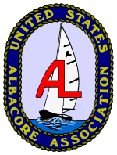
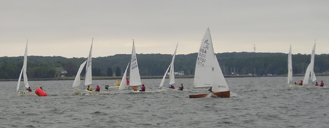
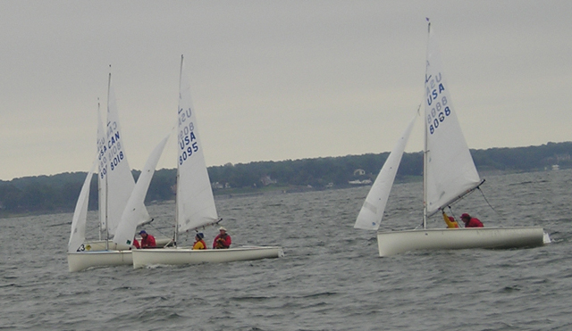
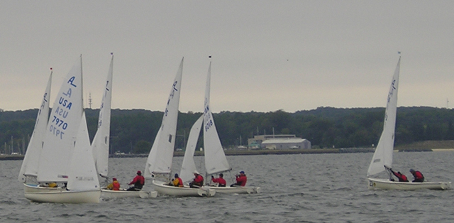
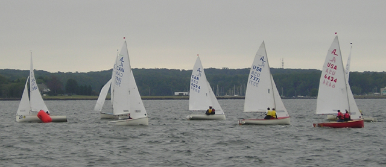
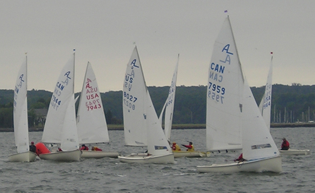

|

2007 Internationals USAA Home About the Albacore Join USAA Contact/Organizational Info Regatta Schedule Pictures Videos Boats/Parts Classifieds Albacourier Articles USAA Forum Albacore Registry Links |
|
|
Photos by: Joy Dorethy from the RC boat. Sunday page 1 | page 2 | page 3 | page 4 Monday: page 5 | page 6 | page 7 | page 8 | page 9 



 | |
|
Questions, comments, suggestions about this site? Contact the Webmaster |